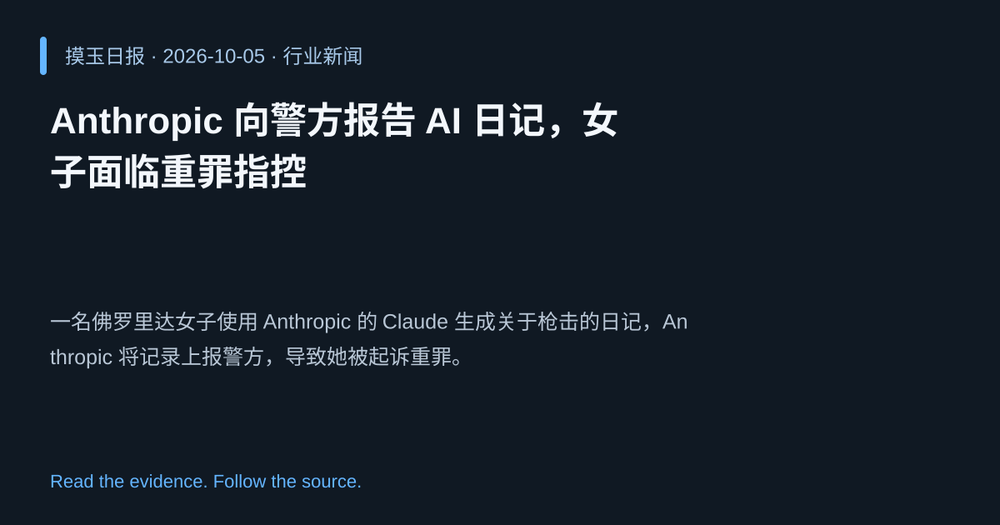

2026-10-05 · Asia/Shanghai · 行业新闻 · #1
Anthropic 向警方报告 AI 日记，女子面临重罪指控
Anthropic reported diary entry to police, woman faces felony charge
一名佛罗里达女子使用 Anthropic 的 Claude 生成关于枪击的日记，Anthropic 将记录上报警方，导致她被起诉重罪。
为什么值得关注
凸显大型语言模型被用于犯罪策划的风险，提醒企业需加强滥用监控。
- AI 生成的文字可被用于非法计划，引发法律后果。
- Anthropic 主动报告，展示企业责任感。
- 案件提醒监管机构关注 LLM 滥用检测。

热度 73.7 / 100；排名与评分保留该期记录。